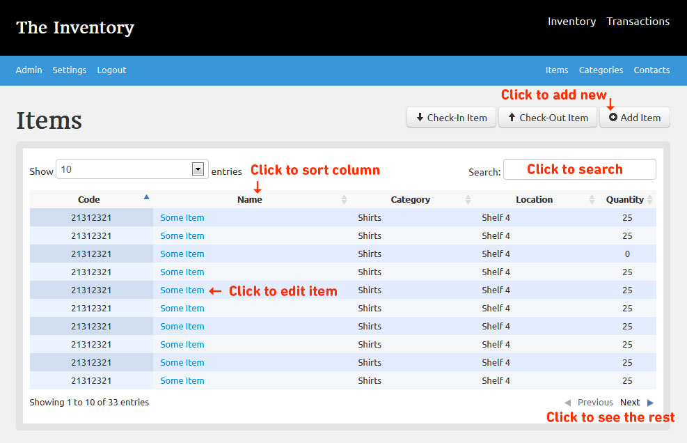
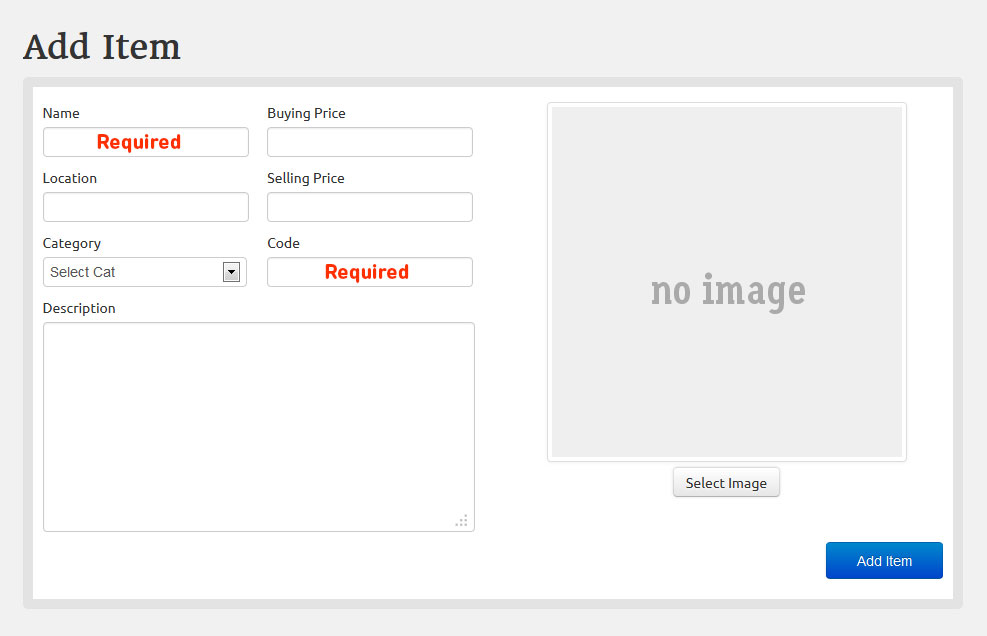
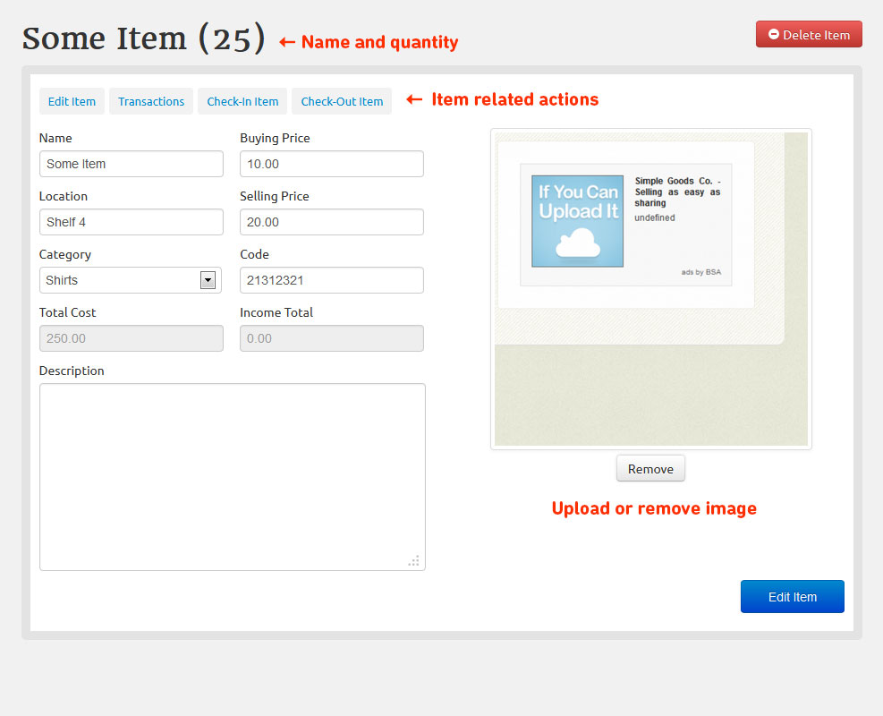
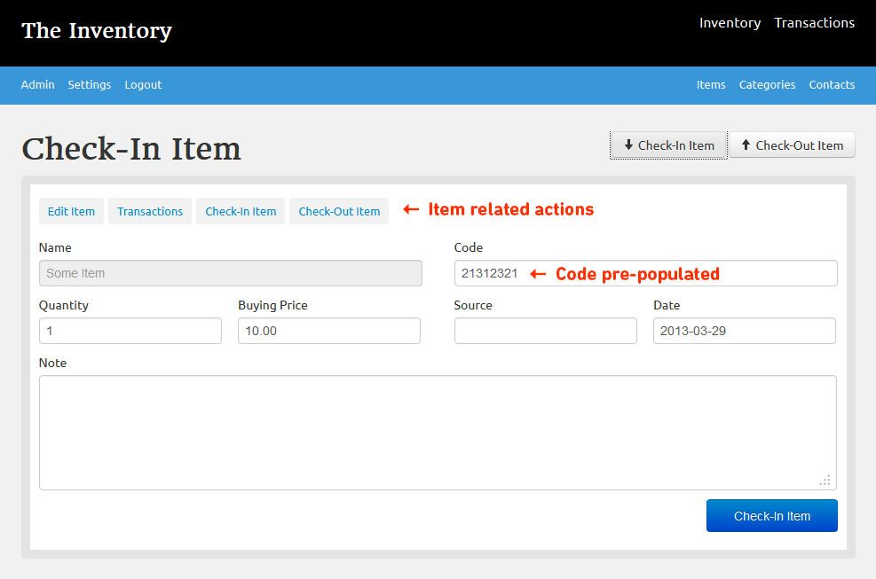
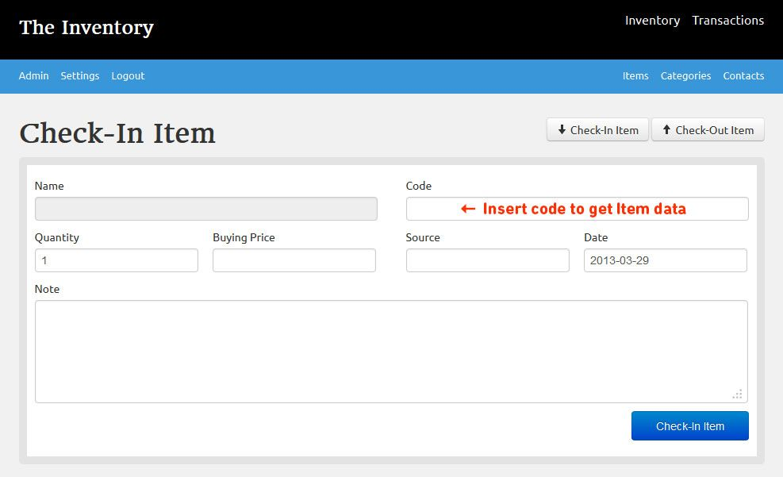

All the items in stock are listed under the Inventory main menu item. It has 3 sub-menu items for the data an item can consist. Items, categories and contacts.
Items are the basics of an inventory - they have to have a name and a code - like one in a barcode.
You add an item, check in some amount of it, to add into the inventory and check out to remove.
Item listing
You find all your items under the Inventory main menu item and Items sub-menu

Add Item
You add item on the items listing page with the Add Item button. You will see the following form.
The required data is Name and Code. Code is needed as this will be the unique identifier for the item.
Click add item and your first item is ready to be used. You can add more items consequently here.

Edit Item
After you add items, they become editable, by clicking on their name in the main item list. This is also where you can delete them.
After you open an item a new menu will appear the item related actions, you can manage the item with those in the inventory.
Let me stop here for a second, and talk about how the pool of items works. every item has a separate field attached to them for
cumulative information like quantity, cost and income. They are separate from item transactions and are not calculated real time in the listing.
Every time a check-in/out happens these numbers are deducted/added from/to main pool, with MySQL transactional safety.
also, every time you open an item to edit these numbers are recalculated, so if anything should happen to database,
by entering onto the edit screen the item numbers will fix themselves.

Check-in/out Item
You get a product into the inventory or remove it via check-in/out buttons. You can change the numbers related to the transaction any time.
Here you can also add contact to a transaction a Seller or a Buyer, no difference from contacts point of view. If there is no name you entered in Database,
a new contact will be added, and appears in contacts menu. From that time on you will be able to select him via drop-down menu here in check-in/out screen.
You can check-in/out items from inventory two ways:
They all lead to the same page, the only difference is that coming from item, the page will get an ID of item and pre-populate all the fields and have an item related actions menu

If you enter to an empty check-in/out page, after entering product code the fields will pre-populate themselves

Created with the Personal Edition of HelpNDoc: Create iPhone web-based documentation